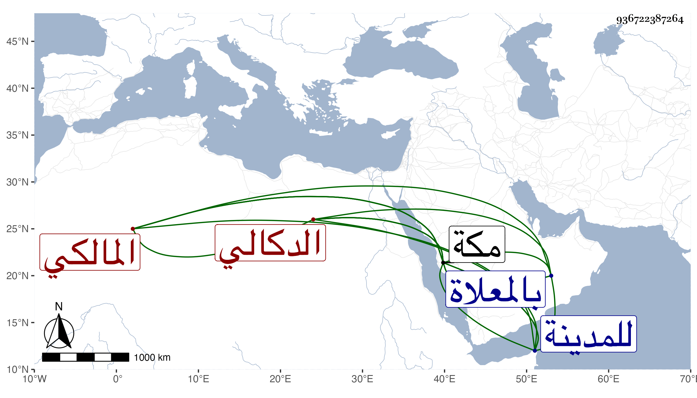

0902Sakhawi.DawLamic.ITO20230111-ara1.EIS1600.936722387264
Biography ID: 936722387264
119
أبو بكر بن عبد الرزاق الدكالي المالكي . تفقه في اسندرية عند محمد ابن يوسف السكندري وسكنها مدة واعتقده أهلها لما رأوه من أحواله وكراماته وقدم مكة على رأس القرن فجاور بها بضعا وعشرين سنة مديما للصلاة والطواف والصيام وتوجه في غضونها للمدينة مرة بعد أخرى وتسرى بأمة رزق منها ذكرا وأنثى كل ذلك مع كثرة خيره وصلاحه وورعه واجتهاده في العبادة بحيث يستغرق فيها أوقاته حتى مات شهيدا مبطونا في رجب سنة سبع وعشرين بالحزامية بمكة ودفن بالمعلاة وكان الجمع في تشييعه وافرا فيه صاحب مكة الشريف على بن عنان ومقدم عسكرها قرقماس الأشرفي وهو ابن ستين ظنا ذكره الفاسي مطولا وقال أنه كان كثير المودة له ويسأله عن كثير من فروع الفقه وأنه على ذهنه أشياء من أسرار الحروف والأسماء رحمه الله وإيانا .
